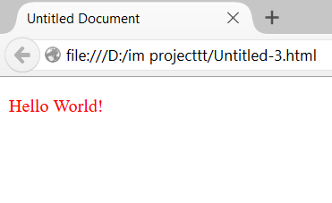
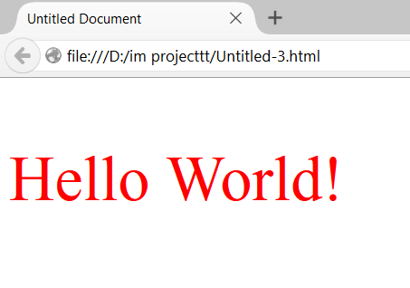

Inline CSS
An inline style may be used to apply a unique style for a single element.
To use inline styles, add the style attribute to the relevant element. The style attribute can contain any CSS property.
For example, consider the following case:
<p style="color:red;">Hello World!</p>
In this the color of paragraph would change to red.

Similarly, inline CSS can be applied to other tags than just paragraph tag.
We can apply Inline css to body,head, h1, etc.
along with font-color, we can also edit the font-size, background color, images, etc,
<p style="color:red; font-size:56px;">Hello World!</p>
It would change both color and font size of the text.

Designed by Kashish Gupta, Hargun Singh, Karan Verma.